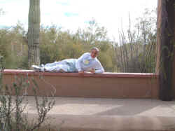
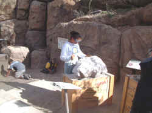
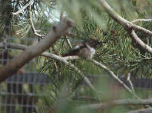
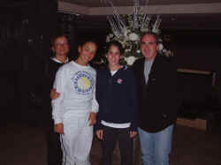
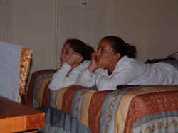
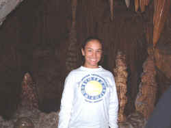
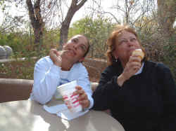
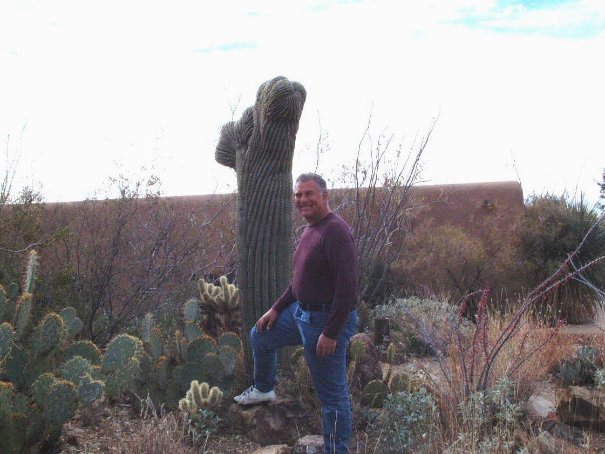

|
Happy
New Year everyone! January 1st was a lovely day here. This is
the first day of the Copper Bowl Tournament. Happily, with an
8 am match, we were lucky that the weather was somewhat milder
than it has been. Liz played at the La Ventana site, a
beautiful resort in the mountains. It was a short match, 6-0,
6-1 against a player from Illinois, Maggie Caulk. Not even a
work-out unfortunately.
 |
|
Desert Girl at home
in the Desert Museum |
The early morning match gave us an opportunity to do some
touring. We took a forty minute drive into the mountains to
The Desert Museum in Saguaro National Park. Winding up the
mountain roads brought us closer and closer to those little
sticks on the mountains which were hundreds upon hundreds of cacti.
Thu running joke was that the girls could not find a cactus
thicker than Dad. Ho, ho, ho.
 |
|
Chiseling
for artifacts. |
The museum was a multifaceted little gem. The desert gardens
were a treat as we walked the paths of the museum. We descended
into a dark cave a got a charming view of life in the mineral
world. There was the smallest zoo of local animals in t r
natural environment. The puma, black bear, otters, beaver and
deer. The birds were lots of fun. I help a very long
conversation with a road runner. My lips are still sore from
puckering up.
The real treat of the museum was a pair of
aviaries. One was filled with local birds enjoying the
greenery. The second was strictly for hummingbirds. There were
only 17 in the aviary at the time. They don't get many more
than 30 at any time since these tiny birds are highly
territorial and anxiety is extremely hazardous to their
health. It was a delightful time for the three of us.
 |
|
Hummingbird
at rest. |
|
|
 |
|
The
elegant entrance to La Ventana |
We
arrived back in the Tucson area in time for Lizzie to do some
light drilling with her friend Juliana. Afterward, we headed
out for a spectacular dinner at La Ventana. We were far too
underdressed to be respectable, but we were seated in a
pleasant alcove. The hotel is truly a five star resort and the
restaurant proved itself over every course with a bonus of a
world class wine list. This may be the only time that I ask a
captain to add water to an ice bucket that Evian will be used.
That provided some good laughs. A nice Louis Roederer
champagne was followed by a wonder 1993 Pommard from Hubert de
Montille. Yum. Four of the five of us ordered Dover Sole in a scrumptious
preparation. The lobster salad appetizer was wrapped in a
closed flower of tomatoes that opened gloriously at a slight
touch forming perfect pedals around the lobster and chanterelles.
The sky was filled with twinkling stars as we departed the
restaurant and headed back for some needed rest.
 |
|
A
moment for TV before head to La Ventana. |
 |
|
Some
stalactites tickle Lizzie fancy. |
 |
|
That's
what ice cream does to you.
 |
|
Bigger
than a cactus. |
|
|